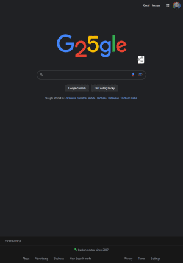
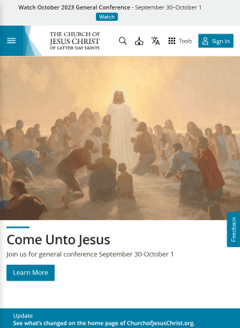
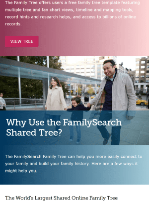

Visual Hierarchy

Visual hierarchy allows designers to accentuate the importance of a screen's contents by manipulating
characteristics such as:
- Size
- Colour
- Contrast
- Alignment
- Repetition
Effective visual heirarchy helps inform, impress and persuade users. This enables users to be
"guided" through the content without confusion.
Repetition

Repetition of some aspect of the design provides stability and consistency. Elemeh2nts that are
typically repeated are:
- Logos
- Colour Schemes
- Fonts and font sizes
- Layouts
- Menu items
The repetition of these elements adds cohesiveness, rhythm and unity to the pages.
Consistency created by this type of repetition makes our users more comfortable.
Contrast

Contrast is the most fun and DRAMATIC element to work with by far. Simple changes in
contrast can have a huge effect. Contrast will add emphasis to the most important elements on the
page. Add contrast to eelments such as:
- Shapes
- Colours
- Spacing
- Fonts
- Textures
High contrast adds depth and interest to the page drawing the viewer in for a second look.